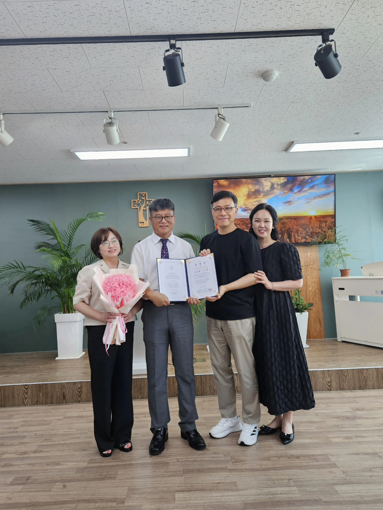
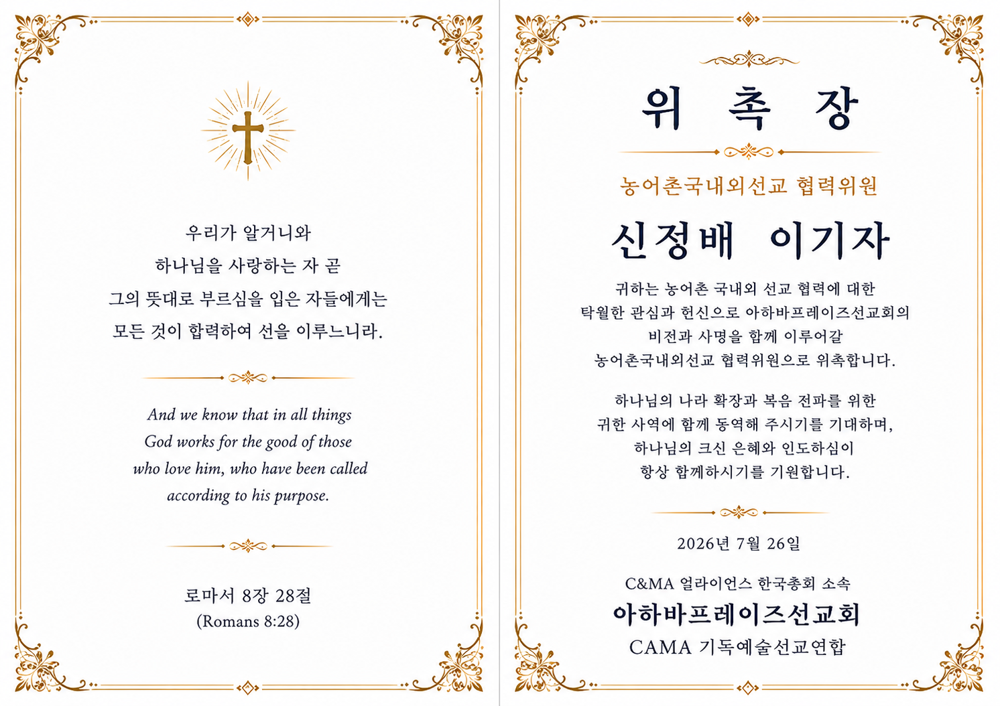
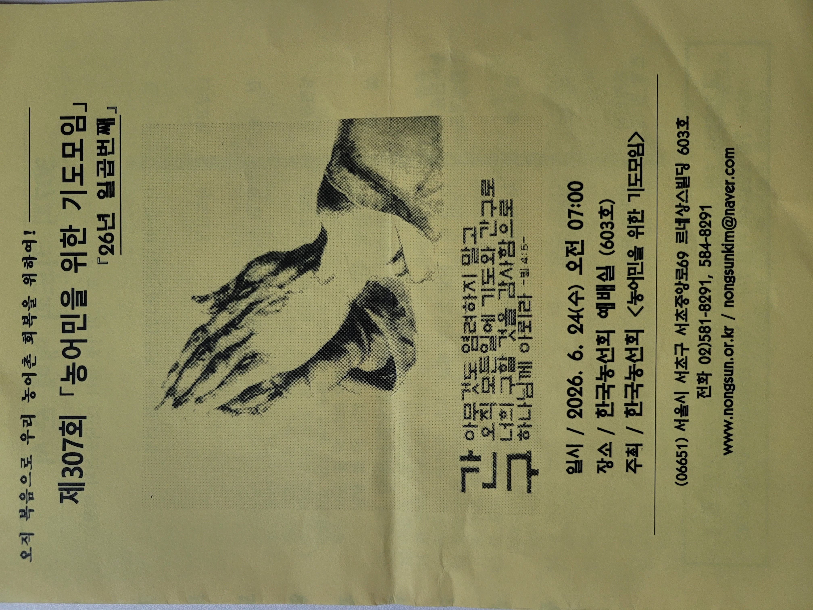

신정배 전도사와 이기자 사모를 농어촌국내외선교 협력위원으로 위촉했습니다.
농어촌 국내외 선교 협력에 대한 관심과 헌신으로 아하바프레이즈선교연합의 비전과 사명을 함께 이어갑니다.
Appointment Record
위촉 기록
협력위원 위촉 현장, 위촉장과 농어민을 위한 기도모임 기록을 확인해 보세요.



신정배 전도사와 이기자 사모를 농어촌국내외선교 협력위원으로 위촉했습니다.
농어촌 국내외 선교 협력에 대한 관심과 헌신으로 아하바프레이즈선교연합의 비전과 사명을 함께 이어갑니다.
Appointment Record
협력위원 위촉 현장, 위촉장과 농어민을 위한 기도모임 기록을 확인해 보세요.

